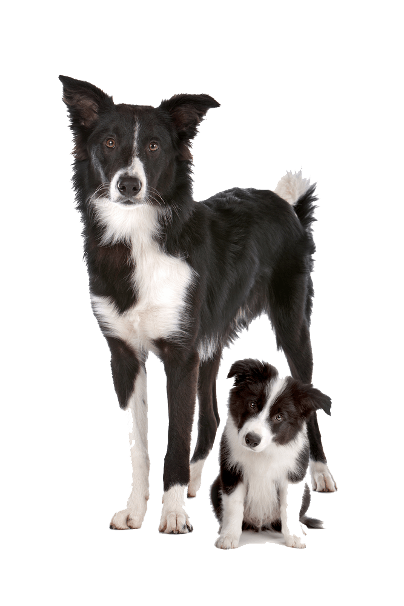
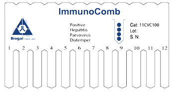

Protect Your Pet
Confirm your pet receives the best protection against the core diseases with VacciCheck titer testing
Validate before you vaccinate!
Leave us your pet’s clinic details, so we can arrange for your clinic to be supplied with VacciCheck and enable the discovery of your pet’s recommended vaccine protocol.
-
Avoids
common vaccine side effects in cats & dogs
-
Avoids
the unnecessary injection of vaccines into your pet
-
Validates
adult pet protection for longer than 3 years
Why titer test?
Core vaccines protect our pets from serious infectious diseases, but when over
vaccinated, your pet may develop side effects such as fever, allergic reactions and immune
mediated diseases. A titer test for core vaccines reveals if antibody is present in your pet’s
blood, eliminating the need to revaccinate.
Reducing over vaccination
has never been simpler
Veterinarians can perform a quick and simple test in
their clinic - VacciCheck. Canine and Feline VacciCheck
determine if a dog or cat has vaccine antibodies in their
blood, or if they require additional vaccination.
Gain control over your
pet’s treatment
VacciCheck tests for 3 diseases per sample and
leads to rapid and accurate results within 30 minutes!
These factors place control into the hands of owners
and vets, enabling them to choose the best
possible care for each pet.
How vets effectively use VacciCheck titer tests

1 Determine
when VacciCheck test should be
performed at vet clinic
Confirm that a newly acquired puppy or kitten is protected after the course of primary vaccinations has been completed at the age of 16 weeks or older and ensure adult pets remain protected every three years.
WSAVA guidelines suggest that titer testing should be performed annually as a precautionary measure for geriatric dogs (over 10 years old).

2 Test
for core vaccine antibodies
with VacciCheck
The ImmunoComb technology, used by VacciCheck, enables the vet to trace antibody levels in your pet in just 30 minutes, indicating whether any measurable level of antibody for core vaccines is present in their blood.
Dogs are tested for Hepatitis, Parvovirus and Distemper antibodies, while cats are tested for Panleukopenia, Herpes and CaliciVirus antibodies.
3 Protect
pets with personalized
vaccine protocols
Once vets have determined which core vaccine antibodies are in your pet’s blood, they can create a personalized vaccine protocol for your pet.
This way, you and your vet can best control when your pet is re-vaccinated, according to your cat or dog’s needs.
Expert Opinions
VacciCheck not only permits core vaccine confirmation of the immunity of adult animals on an annual check-up visit, but it also allows optimizing the primary vaccination protocol for puppies/kittens
- Dr. Jean Dodds
There are many practitioners and owners who need assurance that an animal does have immunity. An antibody test such as the VacciCheck can give them that assurance.
- Professor Ronald Schultz
Research has shown that vaccinating to a dog that is sufficiently immune to a particular infectious agent doesn’t create an increased level of immunity. Such is why I’ve teamed with Spectrum Labs, makers of VacciCheck antibody titer test for Distemper, Adenovirus, and Parvovirus
- Dr. Patrick Mahaney
While some vaccines must be administered annually to sustain a reasonable level of protective immunity, others – namely the core vaccines – provide years of protective immunity in the majority of dogs/cats that are vaccinated.
- Professor Richard Ford
VacciCheck not only permits core vaccine confirmation of the immunity of adult animals on an annual check-up visit, but it also allows optimizing the primary vaccination protocol for puppies/kittens
- Dr. Jean Dodds
There are many practitioners and owners who need assurance that an animal does have immunity. An antibody test such as the VacciCheck can give them that assurance.
- Professor Ronald Schultz
Research has shown that vaccinating to a dog that is sufficiently immune to a particular infectious agent doesn’t create an increased level of immunity. Such is why I’ve teamed with Spectrum Labs, makers of VacciCheck antibody titer test for Distemper, Adenovirus, and Parvovirus
- Dr. Patrick Mahaney
While some vaccines must be administered annually to sustain a reasonable level of protective immunity, others – namely the core vaccines – provide years of protective immunity in the majority of dogs/cats that are vaccinated.
- Professor Richard Ford
Protect your pet – Leave us your pet’s clinic details today!
- Validate before you vaccinate.